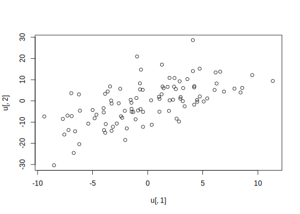

1.4 Bivariate and multivariate distributions
So far, we have only discussed univariate distributions. It is also possible to specify distributions with two or more dimensions.
Understanding bivariate (and, more generally, multivariate) distributions, and knowing how to simulate data from such distributions, is vital for us because linear mixed models crucially depend on such distributions. If we want to understand linear mixed models, we have to understand multivariate distributions.
1.4.1 Example 1: Discrete bivariate distributions
Starting with the discrete case, consider the discrete bivariate distribution shown below. These are data from an experiment where, inter alia, in each trial a Likert acceptability rating and a response accuracy (to a yes-no question) were recorded (the data are from a study by Laurinavichyute (2020), used with permission here).
Figure 1.5 shows the joint probability mass function of two random variables X and Y. The random variable X consists of 7 possible values (this is the 1-7 Likert response scale), and the random variable Y is response accuracy, with 0 representing incorrect responses, and 1 representing correct responses.
agrmt <- read.csv("data/agrmt_discrete_binomial.csv")
rating0 <- table(subset(agrmt, accuracy == 0)$rating)
rating1 <- table(subset(agrmt, accuracy == 1)$rating)
ratingsbivar <- data.frame(rating0 = rating0, rating1 = rating1)
ratingsbivar <- ratingsbivar[, c(2, 4)]
colnames(ratingsbivar) <- c(0, 1)
library(MASS)
## function from bivariate package:
f <- cbvpmf(ratingsbivar)
plot(f, TRUE, arrows = FALSE)
FIGURE 1.5: Example of a discrete bivariate distribution. In these data, in every trial, two pieces of information were collected: Likert responses and yes-no question responses. The random variable X represents Likert scale responses on a scale of 1-7. and the random variable Y represents 0, 1 (incorrect, correct) responses to comprehension questions.
One can also display the figure as a table.
## [,1] [,2] [,3] [,4] [,5] [,6]
## 0 0.01792 0.02328 0.04004 0.04306 0.06331 0.04888
## 1 0.03119 0.05331 0.08566 0.09637 0.14688 0.15317
## [,7]
## 0 0.05493
## 1 0.14199For each possible value of X and Y, we have a joint probability. Given such a bivariate distribution, there are two useful quantities we can compute: the marginal distributions (\(p_{X}\) and \(p_Y\)), and the conditional distributions (\(p_{X|Y}\) and \(p_{Y|X}\)).
The table below shows the joint probability mass function \(p_{X,Y}(x,y)\).
The marginal distribution \(p_Y\) is defined as follows. \(S_{X}\) is the support of X, i.e., all the possible values of X.
\[\begin{equation} p_{Y}(y)=\sum_{x\in S_{X}}p_{X,Y}(x,y).\label{eq-marginal-pmf} \end{equation}\]
Similarly, the marginal distribution \(p_X\) is defined as:
\[\begin{equation} p_{X}(x)=\sum_{y\in S_{Y}}p_{X,Y}(x,y).\label{eq-marginal-pmf2} \end{equation}\]
\(p_Y\) is easily computed, by summing up the rows; and \(p_X\) by summing up the columns. You can see why this is called the marginal distribution; the result appears in the margins of the table.
## 0 1
## 0.2914 0.7086## [1] 1## [1] 0.04912 0.07658 0.12570 0.13943 0.21020 0.20205
## [7] 0.19693## [1] 1The marginal probabilities sum to 1, as they should. The table below shows the marginal probabilities.
Notice that to compute the marginal distribution of X, one is summing over all the Ys; and to compute the marginal distribution of Y, one sums over all the X’s. We say that we are marginalizing out the random variable that we are summing over. One can visualize the two marginal distributions using barplots.

FIGURE 1.6: Marginal distributions of X and Y.
For computing conditional distributions, recall that the conditional distribution of a random variable \(X\) given that \(Y=y\), where \(y\) is some specific (fixed) value, is:
\[\begin{equation} p_{X\mid Y} (x\mid y) = \frac{p_{X,Y}(x,y)}{p_Y(y)} \quad \hbox{provided } p_Y(y)=P(Y=y)>0 \end{equation}\]
As an example, let’s consider how \(p_{X\mid Y}\) would be computed. The possible values of \(y\) are \(0,1\), and so we have to find the conditional distribution (defined above) for each of these values. I.e., we have to find \(p_{X\mid Y}(x\mid y=0)\), and \(p_{X\mid Y}(x\mid y=1)\).
Let’s do the calculation for \(p_{X\mid Y}(x\mid y=0)\).
\[\begin{equation} \begin{split} p_{X\mid Y} (1\mid 0) =& \frac{p_{X,Y}(1,0)}{p_Y(0)}\\ =& \frac{0.018}{0.291}\\ =& 0.0619 \end{split} \end{equation}\]
This conditional probability value will occupy the cell X=1, Y=0 in the table below summarizing the conditional probability distribution \(p_{X|Y}\). In this way, one can fill in the entire table, which will then represent the conditional distributions \(p_{X|Y=0}\) and \(p_{X|Y=1}\). The reader may want to take a few minutes to complete the table.
Similarly, one can construct a table that shows \(p_{Y|X}\).
1.4.2 Example 2: Continuous bivariate distributions
Consider now the continuous bivariate case; this time, we will use simulated data. Consider two normal random variables \(X\) and \(Y\), each of which coming from, for example, a Normal(0,1) distribution, with some correlation \(\rho\) between the two random variables.
A bivariate distribution for two random variables \(X\) and \(Y\), each of which comes from a normal distribution, is expressed in terms of the means and standard deviations of each of the two distributions, and the correlation \(\rho\) between them. The standard deviations and correlation are expressed in a special form of a \(2\times 2\) matrix called a variance-covariance matrix \(\Sigma\). If \(\rho_u\) is the correlation between the two random variables, and \(\sigma _{x}\) and \(\sigma _{y}\) the respective standard deviations, the variance-covariance matrix is written as:
\[\begin{equation}\label{eq:covmatfoundations} \Sigma = \begin{pmatrix} \sigma _{x}^2 & \rho\sigma _{x}\sigma _{y}\\ \rho\sigma _{x}\sigma _{y} & \sigma _{y}^2\\ \end{pmatrix} \end{equation}\]
The off-diagonals of this matrix contain the covariance between \(X\) and \(Y\).
The joint distribution of \(X\) and \(Y\) is defined as follows:
\[\begin{equation}\label{eq:jointpriordistfoundations} \begin{pmatrix} X \\ Y \\ \end{pmatrix} \sim \mathcal{N}_2 \left( \begin{pmatrix} 0 \\ 0 \\ \end{pmatrix}, \Sigma \right) \end{equation}\]
The joint PDF is written with reference to the two variables \(f_{X,Y}(x,y)\). It has the property that the area under the curve sums to 1. Formally, we would write this as a double integral: we are summing up the area under the curve for both dimensions X and Y (hence two integrals).
\[\begin{equation} \iint_{S_{X,Y}} f_{X,Y}(x,y)\, dx dy = 1 \end{equation}\]
Here, the terms \(dx\) and \(dy\) express the fact that we are summing the area under the curve along the X axis and the Y axis.
The joint CDF would be written as follows. The equation below gives us the probability of observing a value like \((u,v)\) or some value smaller than that (i.e., some \((u',v')\), such that \(u'<u\) and \(v'<v\).
\[\begin{equation} \begin{split} F_{X,Y}(u,v) =& P(X<u,Y<v)\\ =& \int_{-\infty}^u \int_{-\infty}^v f_{X,Y}(x,y)\, dy dx \hbox{ for } (x,y)\in \mathbb{R}^2\\ \end{split} \end{equation}\]
As an aside, notice that the support for the normal distribution ranges from minus infinity to plus infinity. There can however be other PDFs with a more limited support; an example would be a normal distribution whose pdf \(f(x)\) is such that the lower bound is truncated at, say, 0. In such a case, the area under the range \(\int_{-\infty}^0 f(x) \, dx\) will be 0 because the range lies outside the support of the truncated normal distribution.
A visualization will help. The figures below show a bivariate distribution with correlation zero (Figure 1.7), a positive (Figure 1.8) and a negative correlation (Figure 1.9).

FIGURE 1.7: A bivariate Normal distribution with zero correlation. Shown are four plots: the top-right plot shows the three-dimensional bivariate density, the top-left plot the contour plot of the distribution (seen from above). The lower plots show the cumulative distribution function from two views, as a three-dimensional plot and as a contour plot.

FIGURE 1.8: A bivariate Normal distribution with a positive correlation of 0.6. Shown are four plots: the top-right plot shows the three-dimensional bivariate density, the top-left plot the contour plot of the distribution (seen from above). The lower plots show the cumulative distribution function from two views, as a three-dimensional plot and as a contour plot.

FIGURE 1.9: A bivariate Normal distribution with a negative correlation of -0.6. Shown are four plots: the top-right plot shows the three-dimensional bivariate density, the top-left plot the contour plot of the distribution (seen from above). The lower plots show the cumulative distribution function from two views, as a three-dimensional plot and as a contour plot.
In this book, we will make use of such multivariate distributions a lot, and it will soon become important to know how to generate simulated bivariate or multivariate data that is correlated. So let’s look at how to generate simulated data next.
1.4.3 Generate simulated bivariate (multivariate) data
Suppose we want to generate 100 correlated pairs of data, with correlation \(\rho=0.6\). The two random variables have mean 0, and standard deviations 5 and 10 respectively.
Here is how we would generate such data. First, define a variance-covariance matrix; then, use the multivariate analog of the rnorm function, mvrnorm, to generate \(100\) data points.
library(MASS)
## define a variance-covariance matrix:
Sigma <- matrix(c(5^2, 5 * 10 * 0.6, 5 * 10 * 0.6,
10^2), byrow = FALSE, ncol = 2)
## generate data:
u <- mvrnorm(n = 100, mu = c(0, 0), Sigma = Sigma)
head(u)## [,1] [,2]
## [1,] -0.453 5.233
## [2,] 4.222 6.372
## [3,] 3.602 10.269
## [4,] -6.151 -4.627
## [5,] -3.412 6.823
## [6,] -2.036 -18.415A plot confirms that the simulated data are positively correlated.

As an exercise, try changing the correlation to \(0\) or to \(-0.6\), and then plot the bivariate distribution that results.
One final useful thing to notice about the variance-covariance matrix is that it can be decomposed into the component standard deviations and an underlying correlation matrix. For example, consider the matrix above:
## [,1] [,2]
## [1,] 25 30
## [2,] 30 100One can decompose the matrix as follows. The matrix can be seen as the product of a diagonal matrix of the standard deviations and the correlation matrix:
## [1] 5 10## [,1] [,2]
## [1,] 5 0
## [2,] 0 10## [,1] [,2]
## [1,] 1.0 0.6
## [2,] 0.6 1.0Given these two matrices, one can reassemble the variance-covariance matrix:
## [,1] [,2]
## [1,] 25 30
## [2,] 30 100There is a built-in convenience function, sdcor3cov in the SIN package that does this calculation, taking the vector of standard deviatio ns (not the diagonal matrix) and the correlation matrix to yield the variance-covariance matrix:
## [,1] [,2]
## [1,] 25 30
## [2,] 30 100We will be using this function a lot when simulating data from hierarchical models.
References
Laurinavichyute, Anna. 2020. “Similarity-Based Interference and Faulty Encoding Accounts of Sentence Processing.” Dissertation, University of Potsdam.